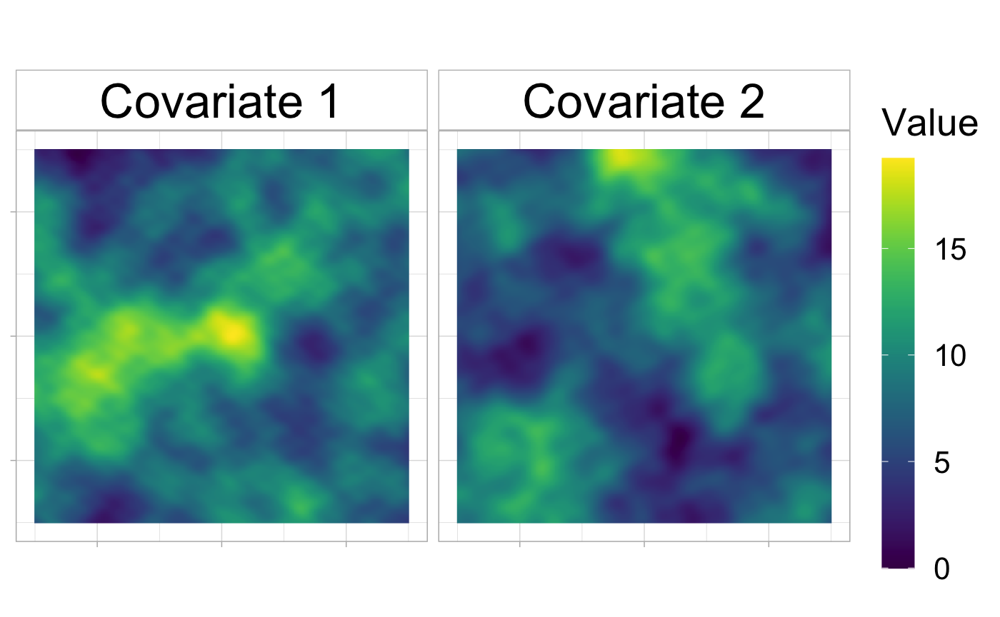
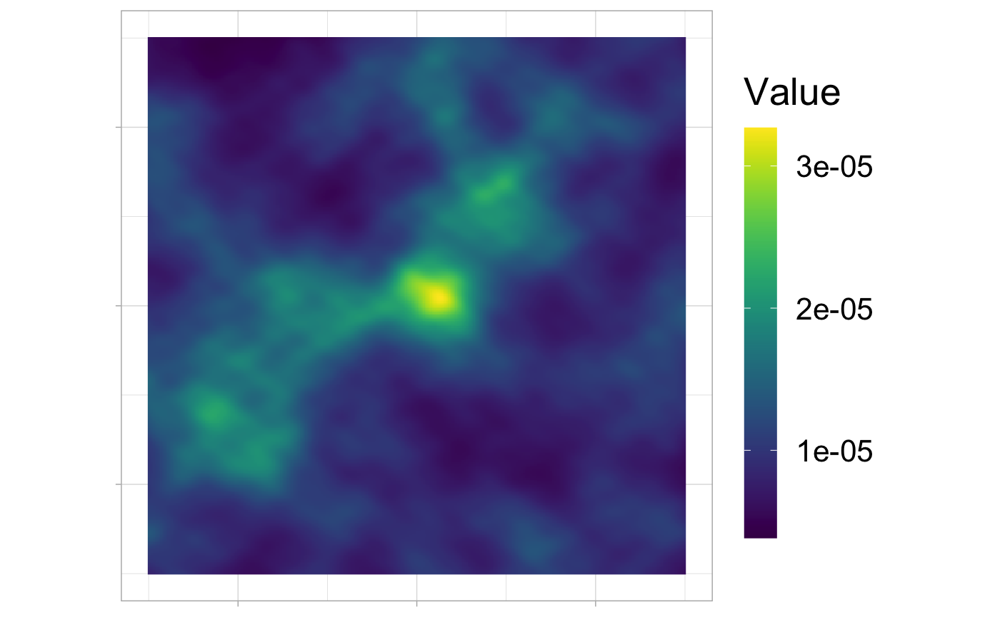
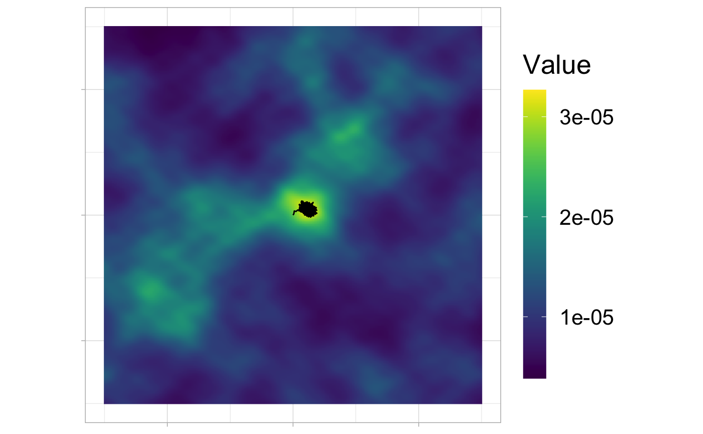

Rhabit_vignette.RmdThis vignette illustrates the use of the Rhabit package to simulate data from a Langevin model and to estimate the parameters.
In the Langevin model, we assume that the movement is directed by a field of covariates. Those fields of covariates are mandatory to simulate a path according to the model.
In the presented example, the path is observed on a square, centered on the origine and whose sides equal 30.
In order to g a enerate a field of covariates, we propose to simulate two Mattern processes with the same parameters parameters \((\rho, \nu, \sigma^2)\) The covriates are obtained by applying a log transformation to the square of the Mattern process.
set.seed(1)# repeatability lim <- c(-15, 15, -15, 15) # limits of map resol <- 0.1 # grid resolution rho <- 4; nu <- 1.5; sigma2 <- 10# Matern covariance parameters mean_function <- function(z){# mean function -log(3 + sum(z^2)) } J <- 2 # number of covariates
Then, simulating
covariates <- replicate(J, simSpatialCov(lim, nu, rho, sigma2, resol = resol, mean_function = mean_function, raster_like = T), simplify = F)
The resulting covariates are available in the package~:
data("covariates", package = "Rhabit")
ggopts <- theme_light()+theme(text = element_text(size = 20), axis.text = element_blank(), axis.title = element_blank(), legend.key.height= unit(3, "line"), strip.background = element_rect(fill="white",colour = "grey") , strip.text = element_text(size = 25, color = "black")) levels <- factor(paste("Covariate", 1:J), levels = paste("Covariate", 1:J)) cov_df <- do.call(rbind.data.frame, lapply(1:J, function(j){ Rhabit::rasterToDataFrame(covariates[[j]], levels[j]) })) ggplot(cov_df, aes(x,y)) + geom_raster(aes(fill = val)) + coord_equal() + scale_fill_viridis(name = "Value") + facet_wrap(level~.) + ggopts

\[\begin{equation} \rmd\X_t = \dfrac{\gamma^2}{2} \nabla \log \ud(\X_t) \rmd t + \gamma \rmd \bm{W}_t,\quad \X_0 =\bm{x}_0. \end{equation}\]
beta_true <- c(10, 5) ud_rast <- covariates[[1]] # initialization dx <- diff(ud_rast$x)[1] dy <- diff(ud_rast$x)[1] ud_rast$z <- exp(Reduce("+", lapply(1:J, function(j) dx * dy * beta_true[j] * covariates[[j]]$z))) ud_rast$z <- ud_rast$z / sum(ud_rast$z) ud_df <- rasterToDataFrame(ud_rast) ggplot(ud_df, aes(x,y)) + geom_raster(aes(fill = val)) + coord_equal() + scale_fill_viridis(name = "Value") + ggopts

Setting simulation parameters:
t_final <- 10 n_obs <- 10001 times <- seq(0, t_final, length.out = n_obs)
Then, one can simulate using cov_list
set.seed(1) #repeatability tracks <- simLangevinMM(beta = beta_true, gamma2 = 10, times = times, loc0 = c(0, 0), cov_list = covariates, keep_grad = T)
These simulated tracks are a data set that can be loaded
data("tracks", package = "Rhabit")
And can be plotted
ggplot(ud_df, aes(x,y)) + geom_raster(aes(fill = val)) + coord_equal() + scale_fill_viridis(name = "Value") + geom_path(data = tracks[, 1:2]) + ggopts

The dataset is expected to contain columns - x and y which specify the relocations - t , for the corresponding times - for each variable of interest, let’s say V1, two columns V1_x and V1_y which contain the computed gradient of covariates V1 at the recorded location.
## test with the formula fitted_langevin <- fit_langevin_ud( cbind(x,y) ~ grad_c1 + grad_c2, data = tracks)
The effects of the covariates can be obtained via
coef(fitted_langevin)
grad_c1 grad_c2
10.426025 5.124737 while the speed parameter is obtained through
speed_coef(fitted_langevin)
[1] 10.03088The function tests for every covariate, if the corresponding parameter equals 0 or not.
The Null hypothesis for the speed parameter is \(\gamma^2 =0\).
summary(fitted_langevin)
Formula:
cbind(x, y) ~ grad_c1 + grad_c2
Coefficients:
Estimate Std. Error t value Pr(>|t|)
grad_c1 10.426025 0.2546123 40.94864 0.000000e+00
grad_c2 5.124737 0.1414662 36.22588 2.243933e-278
Speed parameter:
Estimate chi value Pr(>|t|)
gamma2 10.03088 200597.5 0The confidence intervals for each parameter are available with.
fitted_langevin$CI
0.025 0.975
grad_c1 9.926995 10.925056
grad_c2 4.847468 5.402005
gamma2 9.837136 10.230432The expected trend in the movement at each observed location is given by
head(fitted_langevin$predicted, n = 10)
# A tibble: 10 x 4
ID x y t
<dbl> <dbl> <dbl> <dbl>
1 1 NA NA 0
2 1 0.132 0.0869 0.001
3 1 0.189 0.169 0.002
4 1 0.205 0.375 0.003
5 1 0.338 0.336 0.004
6 1 0.478 0.435 0.005
7 1 0.620 0.426 0.006
8 1 0.842 0.480 0.007
9 1 0.852 0.289 0.008
10 1 1.02 0.321 0.009